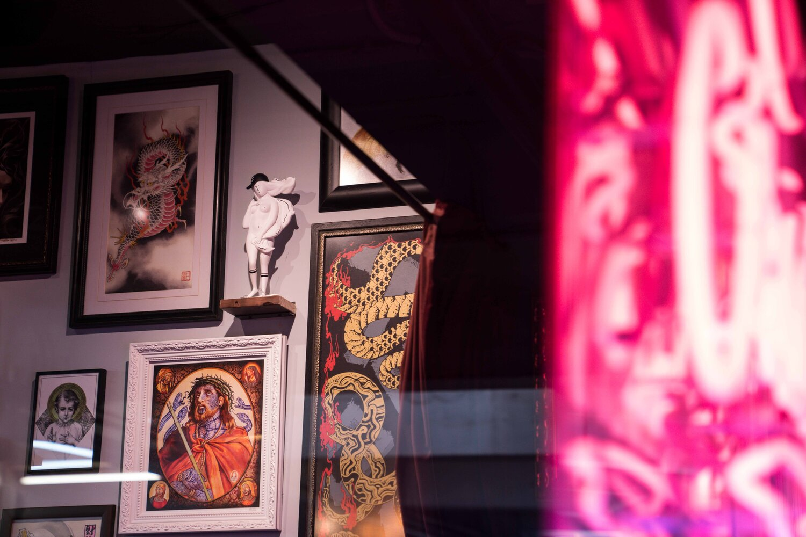
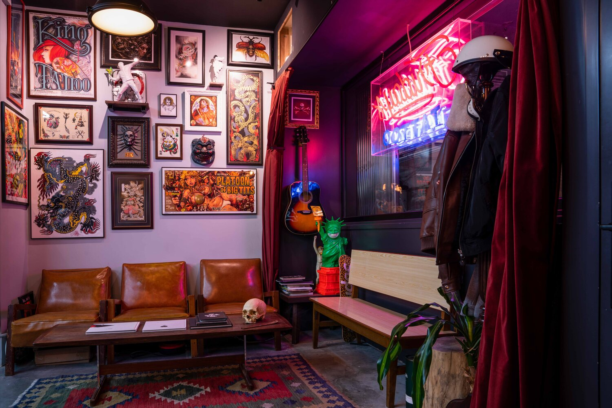
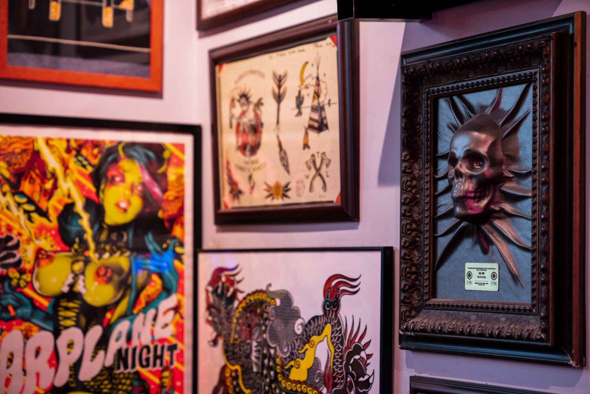

BLACK INK TATTOO
Tenés las ganas y nosotros el tatuaje

Miles de Tatuajes - Miles de Historias
Los tatuajes son una forma de representarnos a nosotros mismos, por eso en Black Ink Tatto nos encargamos de llevar cada diseño al máximo.
